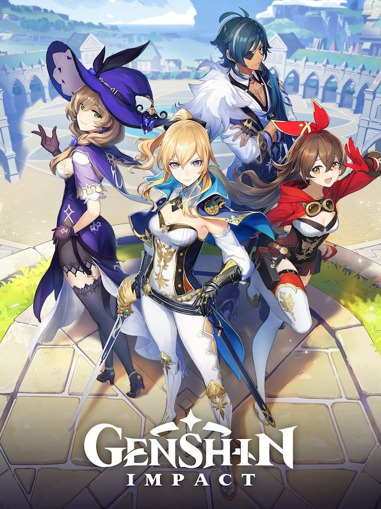

Genshin Impact Game of the year?
September 25, 2025 Josh Alaney
Genshin Impact isn’t just a beautiful open-world RPG,
it’s also a fascinating example of modern game design and coding at work.
Built in Unity, the game blends stunning visual artistry with optimized
code to handle everything from massive landscapes to real-time combat.
The developers use a combination of physics engines, shader effects,
and smooth character animation systems to create a world that feels
alive and immersive. From a coding perspective, it’s impressive how the
game manages performance across different platforms (PC, console, and
mobile) while still maintaining high-quality graphics and fluid gameplay.
This level of cross-platform design is no small feat, as it requires
careful optimization and efficient data management.
Beyond its
technical foundation, Genshin Impact is also shaped by its gacha system,
which makes it highly addictive. The random character and weapon pulls
give players a sense of chance and excitement, much like opening a mystery
box. This design choice keeps players invested over time, not only because
of the thrill of unlocking rare characters, but also because it ties
directly into how the game’s mechanics and progression work. By combining
polished coding, expansive world-building, and a reward system built around
anticipation, Genshin Impact stands out as a prime example of how modern
games balance both technical excellence and psychological engagement to keep
players coming back.